DreamPlace was a Shrek-themed Christmas attraction from DreamWorks Animation, set up in US malls. Families booked a visit to Santa, built a gift wishlist and picked up presents on the day, while an operations team ran every visit. Through Uniq UI, I designed the UI across all four apps. It shipped on time and ran for a couple more years.
Four apps, two audiences, a brand bar set by DreamWorks, and a launch date set by the calendar. Christmas does not move.
I started from DreamWorks' own characters and assets and turned them into one visual language: snow, a sleigh, Santa red and Shrek green. Every app spoke it, on every screen size.
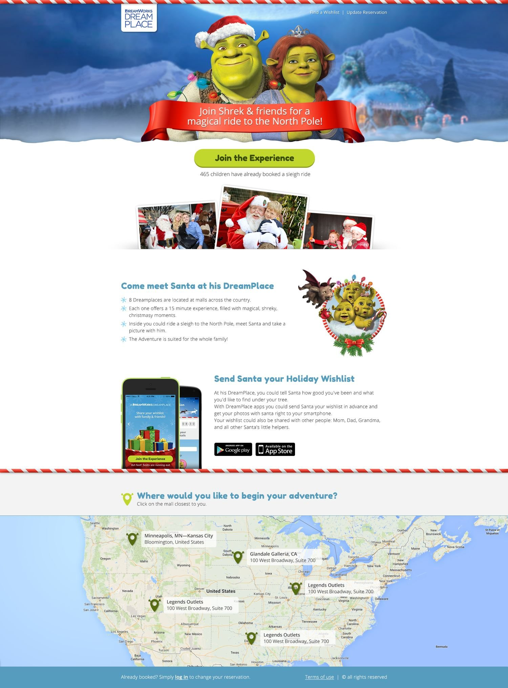
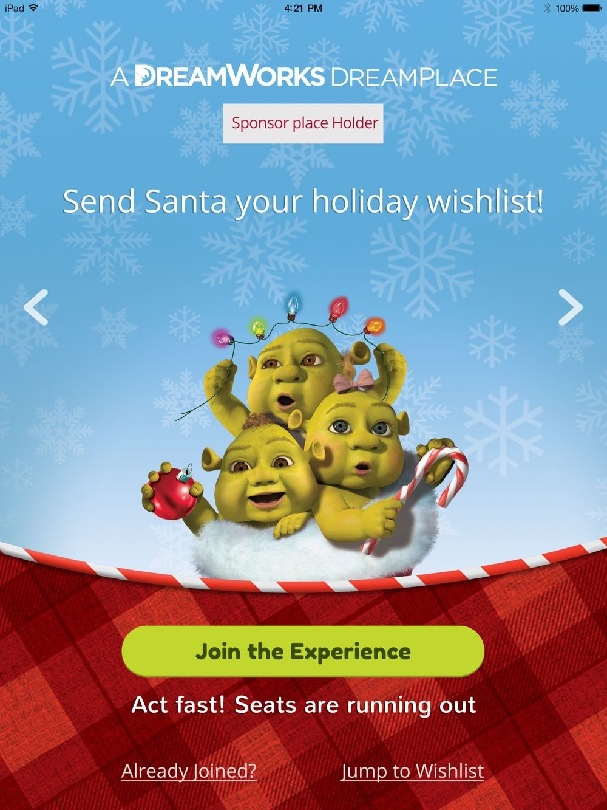
Pick a mall on a map, a day with live availability, then add the children. A countdown holds the slot while the family fills in the form.
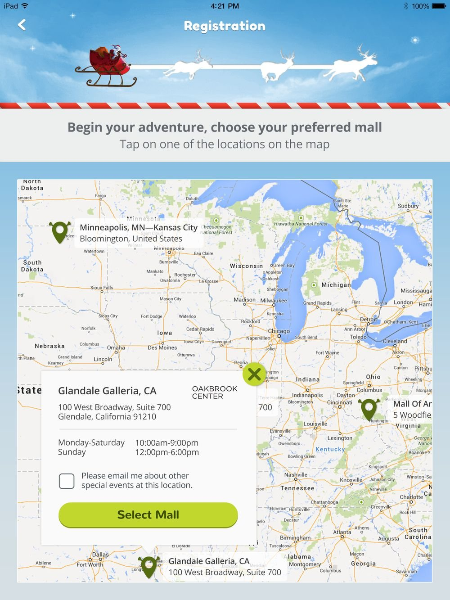
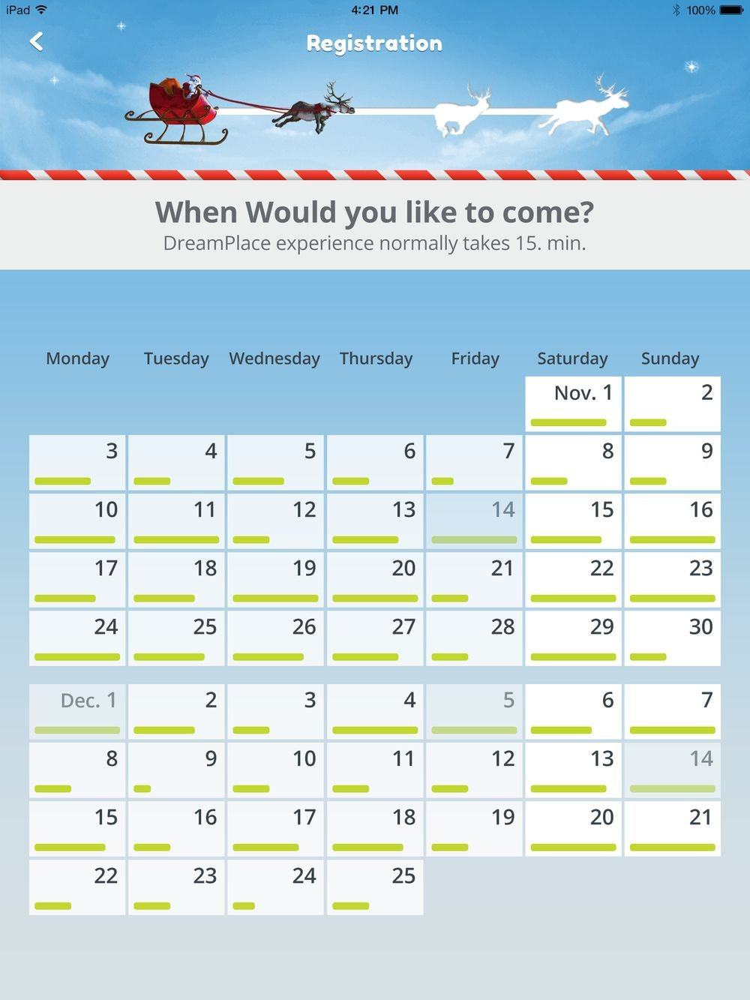
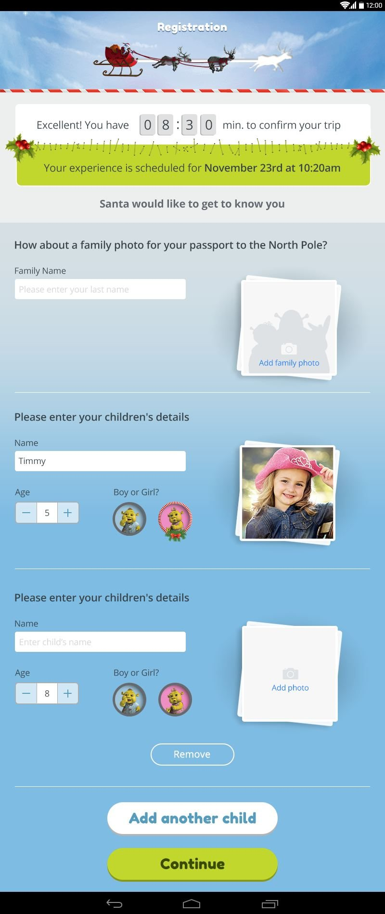
After the visit, photos are ready and parents build each child's wishlist. Gifts are bought ahead and picked up in store with a code. The store ran on Jifiti, DreamWorks' existing e-commerce partner, so the design had to sit on top of it.
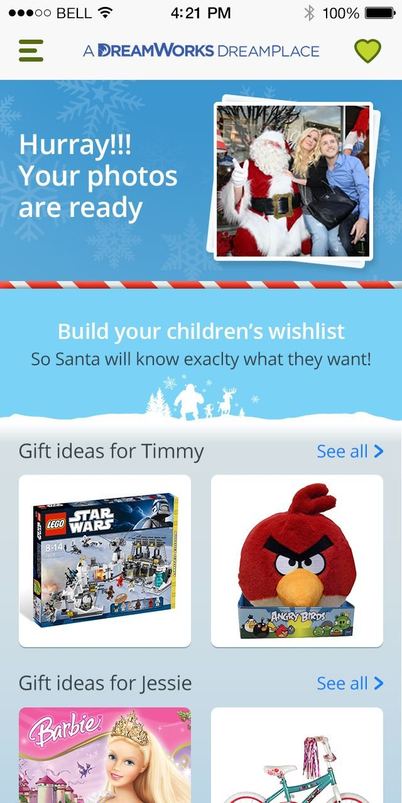
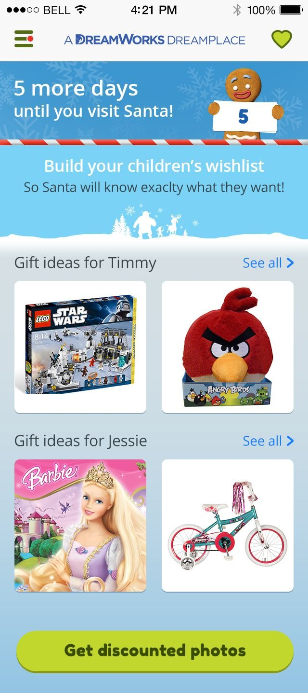
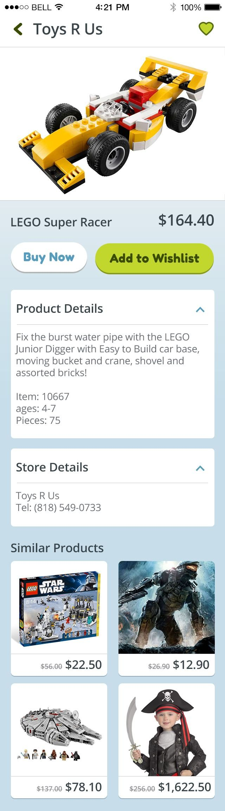
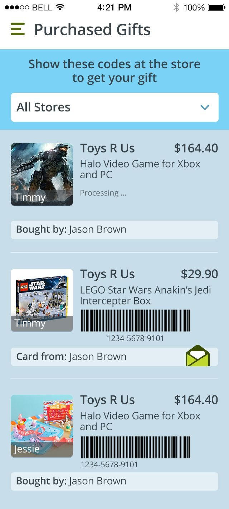
No mall nearby? A child can still send Santa a wishlist. Fallback screens kept the same warmth as the main flow.
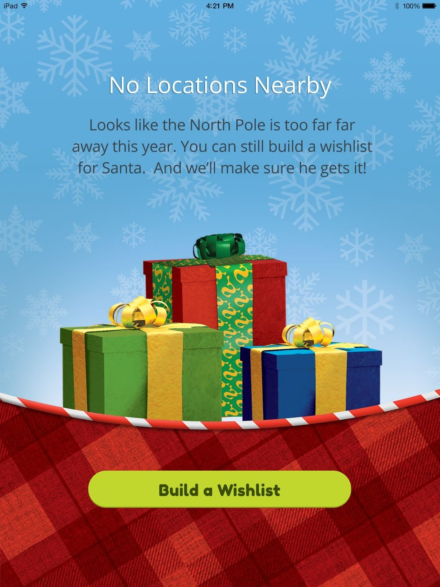
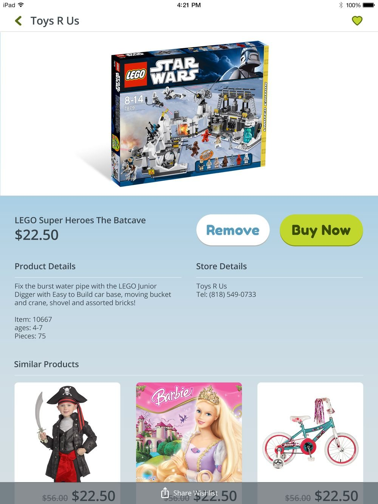
Booking, gifting and operations shared one set of data, so the team on site saw every family's booking and chosen gifts. The pace meant many revision rounds, with feedback crossing from the US to Israel, and the brand had to stay consistent through all of them.
At that pace, a consistent visual system is what lets you change your mind safely.
Let's talk about what you're building.